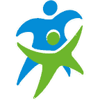

這台裝置無法顯示 3D 島嶼
瀏覽器未啟用 WebGL，或 3D 元件載入失敗。下方按鈕仍可查看科室介紹、醫師介紹與互動工具；也可直接致電 (02) 2276-5566 分機 3242、3244。

職業醫學著重於預防與治療職業疾病和職業傷害。本科於民國90年12月4日成立，本院為勞動部職業傷病診治網絡醫院。本科提供職業病與傷害診治門診、企業特約臨場健康服務（工作環境危害評估、員工工作適應性評估、四大預防計畫指導、健康檢查分析與健康管理）、職業災害勞工職能復健與重返職場，以及勞動能力減損鑑定。服務對象包括企業雇主、人資與職安主管，以及勞工。企業臨場服務範圍為新北市與臺北市。
地址：新北市新莊區思源路127號（醫療大樓門診區）。電話：(02) 2276-5566 分機 3242、3244。電子郵件：om@tph.mohw.gov.tw。
瀏覽器未啟用 WebGL，或 3D 元件載入失敗。下方按鈕仍可查看科室介紹、醫師介紹與互動工具；也可直接致電 (02) 2276-5566 分機 3242、3244。
臺北醫院 職業醫學科
身體怪怪的，跟工作有關係嗎？選一個最接近你的情況。
職醫守護島（衛生福利部臺北醫院 職業醫學科）
本網站使用 Google Analytics 收集匿名的瀏覽統計，用來了解哪些服務說明最常被查看、哪些地方需要改善：
已關閉 Google 信號與廣告個人化，統計資料不用於廣告。
本網站沒有會員或登入功能，不收集姓名、電話、電子郵件、病歷或其他可以識別個人的資料。互動工具（如心血管風險、搬抬演示、臨場次數試算）輸入的數字只在你的瀏覽器裡計算，不會傳送出去。
為了記住你的偏好（例如是否看過導覽、背景音樂與畫面特效的開關），網站會在你的瀏覽器裡存放少量設定。這些設定只留在你的裝置上，不會傳送給任何人；清除瀏覽器資料即可刪除。
網站裡的諮詢表單（Google 表單）、官方 LINE、預約掛號系統等，屬於外部服務，各自依其隱私權政策處理資料。
關閉後，這台裝置的這個瀏覽器將不再傳送瀏覽統計。
有任何疑問，請來信 om@tph.mohw.gov.tw。
衛生福利部臺北醫院 職業醫學科
學歷：國立臺灣大學醫學系、臺灣大學環境與職業健康科學研究所碩士
專科：職業醫學科、家庭醫學科、骨質疏鬆、安寧緩和醫學
經歷：衛生福利部臺北醫院職業醫學科主任；臺大醫院環境及職業醫學部、家庭醫學部醫師
林義哲醫師
身體功能因車禍或職業災害而永久性損失時，評估勞動能力減損的比例，可作為和解或訴訟的參考。受理方式包括法院民事訴訟的囑託鑑定，以及訴訟前的自費門診諮詢；不必等到法院委託才能評估。
林醫師建立的網站，以文章介紹職業醫學與臨場服務，供企業人資、職安人員與勞工參考。文章分為「職災小百科」「職場健康管理」「職場不法侵害」「台積經驗分享」等類別，例如：
衛生福利部臺北醫院 職業醫學科
職業醫學是預防醫學的一個專科，著重於維護工作場所的健康，預防與治療職業疾病和職業傷害。本科結合臨床醫療與工業安全衛生專業人員，提供門診與企業臨場健康服務。
到作業現場辨識物理性、化學性與人因性危害，提出改善建議，並與企業一起推動預防計畫。
依暴露時序與流行病學證據，評估疾病或傷害與工作的因果關係；符合條件者開立職業病診斷書，供申請勞保職災給付。
本院為職業災害勞工職能復健專業機構，提供工作能力評估與強化訓練，協助職災勞工復工。
隱私說明：本網站使用 Google Analytics 統計匿名的瀏覽數據，用於改善網站內容，不用於廣告；互動工具中輸入的健康數值只在您的瀏覽器中計算，不會上傳或儲存。
衛生福利部臺北醫院 職業醫學科｜服務範圍：新北市、臺北市
依《職業安全衛生法》第22條，勞工人數 50 人以上的事業單位，應僱用或特約醫護人員辦理勞工健康保護事項。實際的人力配置與臨場頻率，依《勞工健康保護規則》區分：
本科提供醫護人員實際到場的臨場服務；勞工 300 人以下、需要護理人員臨場的事業單位，本科也有護理人員可以提供。四大預防計畫由事業單位主導訂定，本科醫師提供專業評估與醫學建議，與貴公司的職護、職安人員一起完成計畫中需要醫學判斷的部分。健康講座可依事業單位需求另行安排。
計畫由事業單位主導訂定，本科醫師依下列重點提供評估與醫學建議，與職護、職安人員一起完成。
針對重複性作業、不良姿勢與重物搬運，以 KIM、OWAS、RULA 等工具評估，由醫師提出職務再設計建議。
相關紀錄：肌肉骨骼症狀問卷（NMQ）、危害清冊、改善紀錄
針對輪班、夜間工作與長工時人員，評估工作負荷，並依指引以 Framingham 量表推估 10 年心血管疾病風險後分級；依風險安排醫師面談，必要時建議調整工作時間或工作內容。
涵蓋職場霸凌、言語侮辱、性騷擾與外部人員暴力，協助檢視通報流程與保密機制。
相關紀錄：申訴調查程序、高衝突環境評估、事件後關懷紀錄
對象為妊娠中及分娩後未滿一年的女性勞工，由醫師評估游離輻射、化學品、夜間工作與重體力勞動等危害。
相關紀錄：危害分級管理名冊、工作調整紀錄、哺乳環境
以事業單位的勞工總人數計算。依《勞工健康保護規則》第10條，派遣、承攬等在工作場所受指揮或監督從事勞動的人員，應比照勞工辦理健康服務事項；實際如何計入，歡迎洽詢本科確認。
違反《職業安全衛生法》第22條，依同法第45條可處新臺幣3萬元以上15萬元以下罰鍰。條文以全國法規資料庫公告為準。
職業醫學科門診可安排健檢異常複查、職業病調查與通報；本院職能復健可提供功能性能力評估與工作強化訓練。
隱私權說明｜企業臨場服務：(02) 2276-5566 分機 3242、3244｜院址：新北市新莊區思源路127號（醫療大樓門診區）職災勞工權益、勞動能力減損鑑定：(02) 2276-5566 分機 3240、3245勞工諮詢申訴專線 1955｜安心專線 1925
給企業人資、職安人員與勞工使用的小工具。
火山腳下的房子：用一個比喻看懂機率｜國民健康署 MACE 模型，本科健康管理分級採用的整體性評估
是「未來十年內，發生心肌梗塞、腦中風等重大心血管事件」的機率。例如 15%，代表和你條件相同的 100 個人，十年內大約有 15 個人會發生。
分成三級：10% 以下低風險、10%～20% 中度風險、20% 以上高風險。數字下方也會顯示「同性別、同年齡的平均」，讓你知道自己比同齡的人高或低多少。
多數人的直覺是「還有 85% 不會發生」。換個情境想：一棟房子地段再好、裝潢再漂亮，合約卻寫著「十年內火山有 15% 的機率爆發、淹沒整棟房子」，你敢掏空身家買下它、讓家人住進去嗎？
心肌梗塞和中風就像火山爆發，一旦發生往往無法回頭。面對這種事，15% 其實很高。
可以，這座火山和真的火山不同，它可以降溫。現在的數字不是宿命，而是「什麼都不改」時的預報。可以從這幾件事開始：
勾選上方「把火山降溫」的項目，可以看到改善後的數字。半年後帶新的健檢數值再算一次，看看火山降溫了多少。
這是模型本身的設計。國民健康署的心血管不良事件模型，男性公式採用年齡、腰圍、收縮壓與 HDL，沒有把吸菸列為變項；女性公式才有。所以男性勾選戒菸，這個工具的數字不會改變。
這不代表吸菸沒關係。吸菸會傷害血管、增加多種疾病的風險，戒菸對每個人都值得做。
不需要恐慌，這個數字的用意是提醒，不是診斷。建議帶著健檢報告和這個結果，和公司的臨場醫護人員或醫師討論，確認哪些數值需要追蹤或治療。
也可以到國民健康署慢性疾病風險評估平台，查看其他慢性病的風險；或預約本院職業醫學科門診。
一般健康檢查後的健康管理分級目前沒有官方指引，業界常見的做法是看單一數值：血壓、血糖、血脂各自分級，取最高的一項作為等級。
本科的立場是做整體性評估。同樣是收縮壓 140，對一位 35 歲、腰圍正常的人，和一位 58 歲、腰圍超標、HDL 偏低的人，意義完全不同。MACE 十年風險把多項危險因子合成一個機率，能看出這種差別，也能告訴個案風險從哪裡來、改善哪一項最有效。因此本科在一般健康管理上以 MACE 十年風險分級，並據以向個案衛教。
用途不同。異常工作負荷促發疾病預防依官方指引，以 Framingham 量表評估腦心血管疾病風險，再與工作負荷合併分級；本工具不取代這套流程。
MACE 模型由國民健康署與國家衛生研究院以國人資料建立，本科用於一般健康管理的分級與衛教。本工具的公式與同齡平均值，已和國民健康署地端程式（第 4 版）核對一致。
公式與同齡平均值依國民健康署「慢性疾病風險評估」心血管不良事件模型（第 4 版，男女分別計算）；本工具不儲存任何輸入資料。
互動演示：仿照教學用的搬抬示範模型，加上研究證據
為什麼要重視搬抬？
每 10 位受僱者，約有 4 位過去一年有下背（腰部）痠痛；近一年認定的職業病中，職業性下背痛與手臂頸肩疾病約占 65%。
資料來源：勞安所 2022 年勞動環境安全衛生認知調查（下背痠痛 39.2%）；勞保局職業病給付認定統計（114 年 7 月至 115 年 6 月，582 件中 376 件）。
醫學教學常用一種桌上型的搬抬示範模型：人偶可以用「彎腰」或「屈膝直背」兩種姿勢舉起重物，從側面看得到脊椎。彎腰時腰椎向前彎，椎間盤前緣被壓扁、後緣張開；屈膝直背時椎骨排列整齊。
上面的 3D 演示重現了這個對比，並多加了教具沒有的兩個變數：物品離身體的距離和重量。拖曳畫面可以轉到不同角度看脊椎。
按「搬起來」可以看到物品從地上被抬起、人慢慢站直的過程；和實體教具一樣，物品會在搬起時往身體靠攏，最後抱在腰前。過程中最吃力的是物品剛離地、還離身體最遠的那一刻，畫面會記下這次搬抬的最高負荷。
蹲下、背打直最大的好處，是讓你能把物品拉近身體，腰部的負擔才會真正下降。研究也發現，如果蹲下了、箱子卻還在前方遠處，腰椎的負荷並不會比彎腰低多少。
所以完整的做法是：蹲下、背打直，把箱子拉到兩腳之間、貼近身體，再用腿站起來。蹲著搬比較費力，膝蓋不適或無法蹲下的人，至少要做到讓物品貼近身體，並減輕重量。
物品離身體多遠。腰部承受的力，大約是「重量 × 物品離腰的水平距離」。把「物品離身體多遠」滑桿往右拉，會看到負荷上升得比換姿勢還快。
其次是重量、搬的速度與有沒有扭轉身體。蹲下時把物品放在兩腳之間，就能貼近身體，這正是「蹲下搬」真正有效的原因。
一般的腰痛多數會在幾週內改善，適度活動通常比完全躺著休息好。搬東西時先減少重量與次數，選擇比較不痛的姿勢，很多人會覺得屈膝搬比較舒服。
如果疼痛持續、越來越嚴重，或出現腳麻、腳沒力，請就醫評估。懷疑腰痛和工作有關，可以預約本院職業醫學科門診。
正確的搬抬姿勢是基本功，但光靠姿勢不夠。Cochrane 系統性回顧納入 9 篇隨機試驗、兩萬多名員工，發現單純的搬抬姿勢訓練，沒有減少腰痛、失能或病假；受訓的人知識增加了，但不一定轉化成行為。
所以姿勢衛教要搭配作業改善：減輕重量與次數、讓物品能貼近身體、調整放置高度、提供推車或輔具。這也是職安署《人因性危害預防計畫指引》的改善方向，指引並列出 NIOSH 抬舉公式、KIM 等評估方法。
痠痛也直接影響工作能力：勞安所分析全國調查資料發現，肩膀、臀或大腿、膝蓋任一部位痠痛而影響工作且有請假者，工作能力較弱的機會是沒有痠痛者的 11～38 倍；痠痛但不影響工作者也有 1.9～2.5 倍（勞安所《職場肌肉骨骼傷病健康管理指引》第二版，引用 ILOSH105-A317）。
這些也是人因性危害預防計畫的內容；計畫由事業單位主導訂定，本科醫師負責其中需要醫學判斷的部分，與職護、職安人員一起完成。
所有計算用的數字都有出處，上標為下方文獻編號；畫面的動畫路徑與顏色只影響顯示。核心模型採用勞安所以國人資料建立的 Chaffin 二維模式 [3]。
一、人體參數（國人資料）
二、搬起過程的姿勢（每一幀）
三、髖部伸展力矩
M = g × Σ（節段質量 × 重心到髖的水平距離）＋ g × 物重 × 握點到髖的水平距離
四、L5/S1 壓縮力（Chaffin 懸臂式低背模型）[3][8]
① M = 上半身重 × b ＋ 物重 × h（對 L5/S1）
② 腹內壓 P_A = 10⁻⁴ × [43 − 0.36 × (180 − θH)] × M^1.8（mmHg，上限 150）
③ 腹部力 F_A = P_A × 465 cm²
④ 背肌力 F_m =（M − D × F_A）÷ E；E = 4.75 cm，D = 0.067 ＋ 0.082 × sin(180° − θH)
⑤ 壓縮力 = cos α ×（上方總重 ＋ 物重）− F_A ＋ F_m；剪力 = sin α ×（上方總重 ＋ 物重）
五、NIOSH 搬抬指數 [10]
RWL = 23 × (25 / H) × (1 − 0.003 × |V − 75|) × (0.82 + 4.5 / D) × AM × FM × CM；LI = 物重 ÷ RWL
六、判讀與對照
七、腰椎的畫法
模型限制
參考文獻
國內官方資料與研究（主要依據）
國際文獻：模型公式與判讀標準（上列國內報告亦引用）
國際文獻：搬起過程的姿勢
國際文獻：脊椎與頭部的畫法（不影響數值）
國內背景資料與指引（不參與計算）
研究證據（不參與計算）：van Dieën 1999、Kingma 2006、Verbeek 2011（Cochrane）、Saraceni 2020，說明搬抬姿勢與腰痛的關係。
本演示為衛教用途，不是個人或作業的評估結果；實際作業的負荷，請以現場評估為準。
本演示為衛教用途，數值為相對比較，不是個人或作業的評估結果。有搬抬相關的不適，請就醫評估。